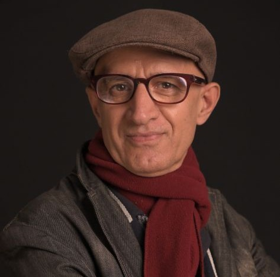

Prof. Hossein Martin Fazeli
Professor of Practice

Professor of Practice
Hossein Martin Fazeli is a distinguished Iranian writer, producer, and director who has been an A-list filmmaker in North America for many years and currently serves as a Professor of Practice at Dadasaheb Phalke International Film School. With over two decades of experience in producing, directing, and writing fiction and non-fiction television and films, Fazeli has built an illustrious career marked by his extensive international collaborations across more than a dozen countries. His works have been broadcast globally on leading networks such as CBC, BBC, ARTE, and Canal+, earning 37 international awards and critical acclaim. Fazeli’s films often explore themes of human rights, women’s rights, and minority rights, underscoring his commitment to social justice. He has collaborated with prominent organizations, including the United Nations Development Programme (UNDP), the European Commission, and Nonviolence International, contributing to impactful film and television projects and national and regional campaigns. One of his landmark productions, the 2007 documentary “The Tale of Two Nazanins”, spotlighted the plight of a teenage girl imprisoned on death row in Iran. Broadcast on major international networks such as BBC and CNN, the film ignited a global campaign that ultimately saved her life, exemplifying Fazeli’s ability to harness the power of storytelling for change. In 2008, Fazeli was honored by the Sundance Institute, participating in their International Filmmakers Award program. As a sought-after speaker, he has lectured globally on the evolving landscape of film production and conducted workshops at prestigious institutions like Simon Fraser University (Canada), SOAS University of London (UK), Aarhus University (Denmark), and the European Film Academy. In addition to his filmmaking, Fazeli is a celebrated Persian poet, known under the pen name “Naanaam”. Currently, Fazeli is completing three human rights-related films, including “PHOOLAN”, a docu-drama on the life and legacy of India’s Bandit Queen.